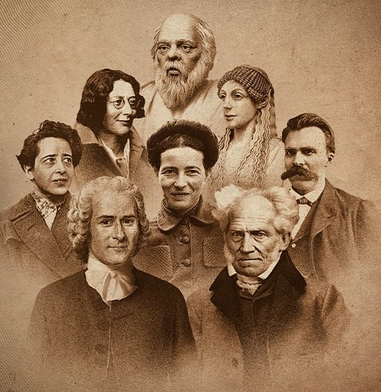

Historia de la Filosofía
◆✧◆
2º de Bachillerato · Recorrido por las grandes épocas del pensamiento occidental, de la Antigüedad a la actualidad.

Autores PAU
Platón, Aristóteles, Santo Tomás, Descartes, Hume, Kant, Nietzsche y Ortega y Gasset: los autores de la Prueba de Acceso a la Universidad, con textos comentados y esquemas.
✓ Publicado
→
Épocas de la Historia de la Filosofía
◆
◇
◆
🏛️

Filosofía Antigua
Presocráticos, sofistas, Sócrates, Platón y Aristóteles: el nacimiento de la filosofía occidental.
🚧 Próximamente
→
⛪

Filosofía Medieval
Patrística y escolástica: la relación entre fe y razón, de San Agustín a Guillermo de Ockham.
🚧 Próximamente
→
🔭

Filosofía Moderna
Racionalismo, empirismo e Ilustración: de Descartes a Kant, pasando por Hume y Rousseau.
🚧 Próximamente
→
💡

Filosofía Contemporánea
Del idealismo alemán al existencialismo: Marx, Nietzsche, Ortega y Gasset y el pensamiento del siglo XX.
🚧 Próximamente
→